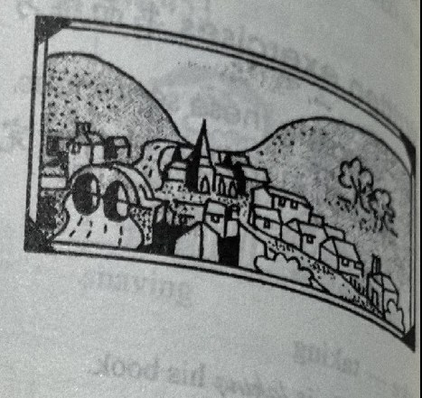
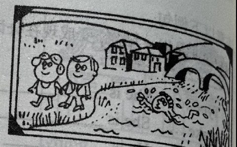
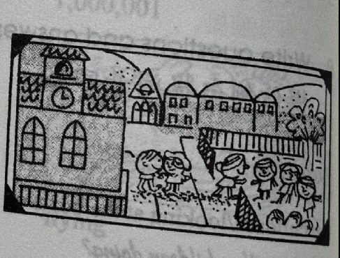

Lesson content · 课文
Lesson 35: Our village · 我们的村庄
Listen then answer this question. 听录音，然后回答问题。
Are the children coming out of the park or going into it?
孩子们是正从公园里出来还是正在往里走？
This is a photograph of our village.
Our village is in a valley.
It is between two hills.
The village is on a river.
Here is another photograph of the village.
My wife and I are walking along the banks of the river.
We are on the left.
There is a boy in the water.
He is swimming across the river.
Here is another photograph.
This is the school building.
It is beside a park.
The park is on the right.
Some children are coming out of the building.
Some of them are going into the park.



New words and expressions · 生词和短语
| Word · 单词 | Pronunciation · 音标 | Meaning · 词义 |
|---|---|---|
| photograph | /ˈfəʊtəɡrɑːf/ | n. 照片 |
| village | /ˈvɪlɪdʒ/ | n. 村庄 |
| valley | /ˈvæli/ | n. 山谷 |
| between | /bɪˈtwiːn/ | prep. 在……之间 |
| hill | /hɪl/ | n. 小山 |
| another | /əˈnʌðə/ | det. 另一个 |
| wife | /waɪf/ | n. 妻子 |
| along | /əˈlɒŋ/ | prep. 沿着 |
| bank | /bæŋk/ | n. 河岸 |
| water | /ˈwɔːtə/ | n. 水 |
| swim | /swɪm/ | v. 游泳 |
| building | /ˈbɪldɪŋ/ | n. 大楼，建筑物 |
| park | /pɑːk/ | n. 公园 |
| into | /ˈɪntə/ | prep. 进入 |
Notes on the text · 课文注释
- The village is on a river. 这句话中的介词 on 不表示“在……上”，而是“邻近”、“靠近”的意思。
- My wife and I … 我和妻子……在英语中表达“我和……”时，要把 I 放在别人的后面。
- Some children are coming out of the building. out of 表示“从里向外”的动作。
Chinese translation · 参考译文
这是我们村庄的一张照片。
我们的村庄坐落在一个山谷之中。
它位于两座小山之间。
它靠近一条小河。
这是我们村庄的另一张照片。
我和妻子正沿河岸走着。
我们在河的左侧。
河里面有个男孩。
他正横渡小河。
这是另一张照片。
这是学校大楼。
它位于公园的旁边。
公园在右面。
一些孩子正从楼里出来。
他们中有几个正走进公园。
Practice · 课文练习
Understand the lesson · 课文理解
Comprehension · 理解题
Answer the question about the lesson text. 根据课文回答问题。
-
comprehension: Comprehension · 理解题 — Are the children coming out of the park or going into it?
Practice worksheet · 配套练习
A. Another photograph of our village
Read this. Fill in the missing words. 填空。
-
worksheet: A. Another photograph of our village — This is another ____ of ____ village.
Some men and women are ____ ____ the street.
Look! A friend and I are ____ in the river.
Another friend is ____ on the bank of the ____.
The school ____ is ____ the left, ____ the park.
Some ____ are coming ____ of the ____.
B. Structure — verb forms
Write the -ing form. Double the final letter. 模仿例句完成以下练习。
-
worksheet: B. Structure — verb forms — run
-
worksheet: B. Structure — verb forms — put
-
worksheet: B. Structure — verb forms — shut
-
worksheet: B. Structure — verb forms — swim
B. Structure — sentences
Use the -ing forms to complete the sentences. 用动词的 -ing 形式填空。
-
worksheet: B. Structure — sentences — The boys are ____ in the river.
-
worksheet: B. Structure — sentences — The children are ____ out of the school.
-
worksheet: B. Structure — sentences — The girls are ____ on their coats.
-
worksheet: B. Structure — sentences — The teacher is ____ her books. It is the end of the lesson.
C. Prepositions
Choose the correct preposition. 用正确的介词填空。
-
worksheet: C. Prepositions — The women are going ____ the shop. (on / into)
-
worksheet: C. Prepositions — Our house is ____ two villages. (between / beside)
-
worksheet: C. Prepositions — The boats are going ____ the bridge. (over / under)
-
worksheet: C. Prepositions — The plane is flying ____ the hills. (beside / over)
-
worksheet: C. Prepositions — The children are jumping ____ the wall. (out of / off)
-
worksheet: C. Prepositions — The cat is jumping ____ the tree. (along / out of)
Grammar practice · 语法练习
I. Fill in the blanks with the correct preposition
- Look! That girl's swimming ___ the river. (over/across)
- Look! That policeman's running ___ the shop. (out of/between)
- Look! John's walking ___ two girls. (across/between)
- Look! The children are going ___ the park. (off/into)
- Look! Mary's running ___ the wall. (beside/along)
- Look! Mark's sitting ___ his grandmother. (beside/between)
- Look! That aeroplane's flying ___ the bridge! (under/in)
- Look! Those people are waiting ___ a bus. (into/for)
- Look! That dog's running ___ our cat! (out of/after)
- Look! That sales rep is going ___ the shop. (across/into)
II. Answer the questions using the cues
- 1a. Is the young man coming out of the river? (go into)
No, he isn't. He's going into the river. What's he doing? (swim) He's swimming.
- 1b. Are you walking across the street? (along)
What are you doing? (look at the shop windows)
- 1c. Is the teacher going into the building? (come out of)
What is she doing? (read a magazine)
- 1d. Are the boys climbing up the tree? (jump out of the tree)
What are they doing now? (play under the tree)
- 2a. What's Ann doing? (read)
She's reading. What's she reading? (a magazine) She's reading a magazine.
- 2b. What's Tim doing? (study)
What's he studying? (English)
- 2c. What are Kathy and her mother doing? (wash)
What are they washing? (the dishes)
- 2d. What's the dog doing? (eat)
What's it eating? (a bone)
- 3a. What's Sam doing? (type a letter)
He's typing a letter. Where's he typing the letter? (in his office) He's typing the letter in his office.
- 3b. What are you and your wife doing? (run)
Where are you running? (along the bank of a river)
- 3c. What are the girls doing? (look at some photographs)
Where are they looking at the photographs? (in the kitchen)
- 3d. What's Helen doing? (clean her teeth)
Where's she cleaning her teeth? (in the bathroom)
Your notes and answers
Use this space for longer responses or exercises that do not have an individual answer box.